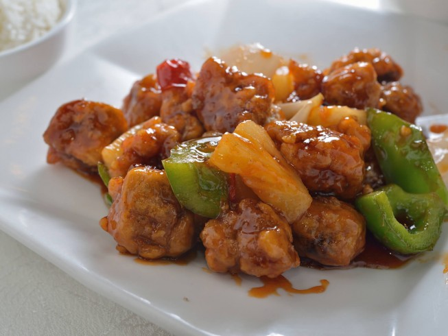

Louisiana Sweet and Sour Alligator

Description
Break out the alligator. Sweet and sour style,
stirred up with saucy pineapple and bell peppers,
this gator tail could almost be mistaken for take-out.
If you don't have any gator handy, chunks of chicken or
slices of steak could fill in nicely.
Ingredients
- 1 1/2 pound alligator tail meat, cut into cubes
- 2 eggs, beaten
- 2 stalks celery, sliced diagonally
- 1 green bell pepper, cut in 1" squares
- 1/2 medium onion, thinly sliced
- 8 ounces unsweetened pineapple chunks
- 8 ounces tomato sauce
- 4 cups vegetable oil
- 1 cup pineapple juice
- 1/3 cup cider vinegar
- 1/3 cup light corn syrup
- 1/3 cup firmly-packed brown sugar
- 1/4 cup all-purpose flour, PLUS
- 2 tablespoons all-purpose flour
- 3 tablespoons corn starch
- 2 tablespoons milk
- 1 teaspoon salt, or to taste
- 1/2 teaspoon garlic salt
- 1/4 teaspoon black pepper
- hot cooked rice
Steps
- Combine eggs, flour, milk and salt; mix well.
Add alligator cubes, stirring to coat.
- In 2 quart deep fryer, heat oil to 350 degrees F. Deep fry
alligator a few pieces at a time, until golden brown. Drain well.
- In a 4 quart saucepan, combine pineapple juice,
brown sugar, cornstarch, tomato sauce, vinegar, corn syrup,
garlic salt and pepper; stir well. Cook over medium heat,
stirring constantly until thickened.
- Stir in alligator chunks, pineapple, bell pepper, celery and onion.
Cover and simmer (10 minutes), then serve over hot cooked rice.
Return to main page